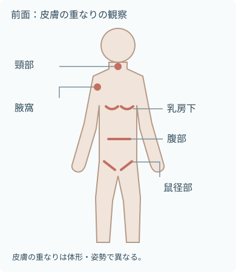
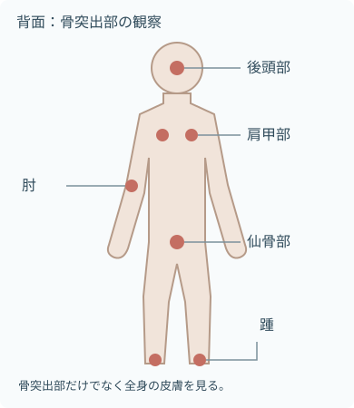

注意事項
始める前に再評価
- 全身状態
- 意識
- 呼吸
- 循環
- 体温
- 顔色
- 発汗
- 疲労
- 症状の確認
- 疼痛
- 悪心
- めまい
- 呼吸苦
- 体位による症状
- 実施上の制限とリスク
- 安静度
- 体位の制限
- 関節可動域の制限
- 転倒リスク
- 転落リスク
- 皮膚・創と指示
- 創傷
- 皮膚疾患
- 手術部位
- 感染対策上の指示
- 医療機器の確認
- 点滴
- 酸素
- ドレーン
- カテーテル
- モニター
- 装具
中止・短縮を考える変化
- 呼吸・循環の変化
- 呼吸苦
- 胸部症状
- 顔色不良
- 冷汗
- 症状の変化
- 強い疼痛
- めまい
- 悪心
- 急な疲労
- 意識や反応の変化
- 医療機器の異常
- 抜去
- 閉塞
- アラーム
- 本人が続行を望まない
目的

- 全身状態
- 皮膚
- セルフケア能力
- 除去するもの
- 汗
- 皮脂
- 汚れ
- 皮膚を清潔に保ち、不快感やかゆみを軽減する
- 早期に見つける変化
- 皮膚の変化
- 圧迫
- 医療機器による損傷
- 清拭で支える生活
- 爽快感
- 睡眠
- 整容
- 生活習慣
- 関節の動きやセルフケア能力を確認する
観察項目

- 湿潤や汚れが残りやすい場所を確認する。
- 皮膚の重なりは体形と姿勢で異なる。

- 圧迫される場所と周囲の皮膚を観察する。
- 体位制限を守り、必要な援助を得て確認する。
- 図は観察部位の例を示す模式図で、傷や病変の位置ではない。
- 印がない部分も含めて全身の皮膚と医療機器の下を観察する。

拭く手と、観察する目を一緒に動かす
- 皮膚の観察
- 色
- 温度
- 乾燥
- 発汗
- 発赤
- 発疹
- 傷
- 浮腫
- 骨突出部の観察例
- 後頭部
- 肩甲部
- 肘
- 仙骨
- 踵
- 皮膚の重なりの観察
- 頸部
- 腋窩
- 乳房下
- 腹部
- 鼠径部
- 医療機器周囲の観察
- チューブの下
- 電極の下
- 装具の下
- 固定テープ周囲
- 動作の観察
- 疼痛
- 拘縮
- 筋力
- 疲労
- できるセルフケア
- 色調と合わせて評価
- 左右差
- 範囲
- 消退の有無
- 熱感
- 硬さ
- 疼痛
- 皮膚の色だけで重症度を決めない。
必要物品

- 清潔な物品
- 使用後のリネン
- 廃棄物
- 清拭用タオルまたは清拭布
- 患者に合う温度の湯
- 湯を入れる容器
- 施設採用の洗浄剤
- 乾いたタオル
- バスタオルまたは掛け物
- 防水シート
- 交換用寝衣
- 必要時、交換用シーツ
- 非滅菌手袋
- エプロン
- 飛散リスクに応じたマスク・眼の防護具
- 使用後リネンを入れる袋
- 廃棄物袋
- 必要時、保湿剤または皮膚保護剤
- 必要時、体位保持用クッション
- タオルの枚数や湯温を一律の数値にしない。
- 温度と方法を調整する条件
- 患者の感覚
- 皮膚状態
- 室温
- 使用方法
- 洗い流さない清拭料は製品表示どおりに使用する。
手順
 説明し、体調と希望を確認
説明し、体調と希望を確認- 本人と共有すること
- 本人確認
- 目的
- 範囲
- 体位
- 疲労時の合図
- 本人の希望と実施能力
- できる部分
- 普段の習慣
- 湯温や洗浄剤の希望
- 本人と共有すること
 環境と物品を整える
環境と物品を整える- 室温とプライバシーを確保。
- ベッドの高さを調整し、転落を防ぐ。
- 清潔物品と使用後物品の場所を分ける。
 一部位だけ露出する
一部位だけ露出する- 掛け物で保温し、拭く部位だけを出す。
- 湯や清拭材の温度を本人と確認。
- 手指衛生と必要なPPEを行う。
 顔から上半身へ
顔から上半身へ- 上半身で清拭する部位
- 顔
- 頸部
- 上肢
- 手
- 腋窩
- 胸部
- 腹部
- 眼周囲は刺激の少ない方法で、清潔な面を使う。
- 上半身で清拭する部位
 下肢と足を清拭
下肢と足を清拭- 片脚ずつ出す。
- 清拭する部位
- 下肢
- 足
- 足趾間
- 観察する変化
- 浮腫
- 冷感
- 傷
- 踵の発赤
- 趾間の湿潤
 側臥位で背部・臀部を清拭
側臥位で背部・臀部を清拭- チューブを確認して安全に体位変換。
- 清拭する部位
- 背部
- 臀部
- 皮膚を観察する部位
- 肩甲部
- 脊柱周囲
- 仙骨部
 水分を残さず、必要時は保湿
水分を残さず、必要時は保湿- こすらず押さえて乾かす。
- 腋窩や乳房下など皮膚の重なりも確認。
- 保湿剤・皮膚保護剤は状態と製品表示に合わせる。
 寝衣・体位・機器を整え、記録
寝衣・体位・機器を整え、記録- 寝衣と寝具を整える。
- 医療機器の再確認
- 位置
- 接続
- 作動
- 安楽な体位へ戻し、反応と皮膚所見を記録する。
拭き方と皮膚保護

摩擦を増やさない
- 清拭布の汚れた面を折り込み、清潔な面へ替える
- 皮膚の状態に応じて圧と回数を減らす
- 同じ場所を何度も往復してこすらない
- 洗浄剤を洗い流す方法か、洗い流さない方法かを確認する
- 最後は乾いたタオルで押さえて水分を取る
- 皮膚の脆弱性に注意する背景の例
- 高齢
- 浮腫
- ステロイド使用
- 低栄養
- これらを背景に皮膚が脆弱な場合は、清拭布と寝具の摩擦・ずれにも注意する。
寝衣交換と医療機器

点滴・ドレーンを外して交換しない
- 寝衣交換前の確認
- チューブの接続
- チューブの余裕
- 固定
- 挿入部
- 一般に脱衣は非留置側から、留置側を最後にする
- 着衣は留置側から袖を通し、非留置側を最後にする
- バッグやポンプを衣類へ通す方法は院内手順へ
- 終了後に再確認
- 屈曲
- 圧迫
- 牽引
- 接続
- アラーム
- 脱衣・着衣の順序を調整する条件
- 麻痺
- 骨折
- 術側
- 拘縮
- 疼痛
- 無理に関節を動かさない。
方法を変える場面
- 全身状態が不安定：全身を一度に行わず、必要部位へ短縮する
- 創傷・手術部位：通常の清拭布で創面をこすらず、ドレッシングと個別手順を確認する
- 失禁：排泄物を長時間触れさせず、陰部洗浄と皮膚保護を組み合わせる
- 感染対策：標準予防策に加え、必要な経路別予防策と物品処理を行う
- 消毒薬含有清拭材の確認
- 適応
- 禁忌部位
- 接触時間
- 乾燥方法
報告・記録
すぐに報告する変化
- 全身状態の悪化
- 呼吸の悪化
- 循環の悪化
- 意識の悪化
- 強い疼痛
- 急な疲労
- 皮膚の変化
- 消えない発赤
- 水疱
- 皮膚剥離
- 出血
- 熱感
- 腫脹
- 創部やドレッシングの汚染・漏れ
- 留置機器の変化
- 抜去
- 位置変化
- 閉塞
- 本人が訴える新しい症状
記録すること
- 実施内容の記録
- 実施範囲
- 方法
- 使用した洗浄剤
- 使用した保湿剤
- 全身状態と皮膚所見
- 本人が行えた動作と必要な介助
- 実施中・実施後の反応
- 報告内容と、その後の対応